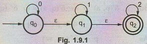
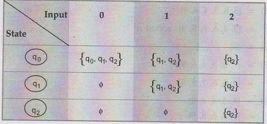
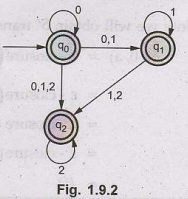
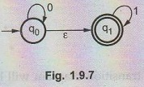
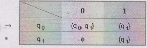
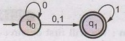
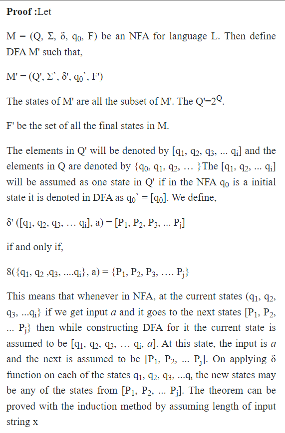
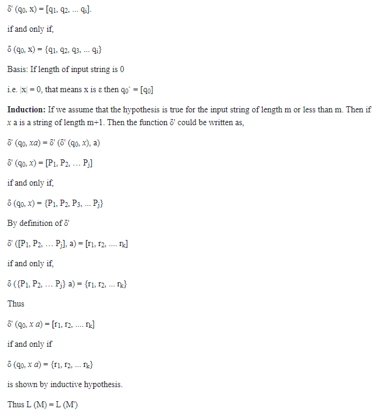
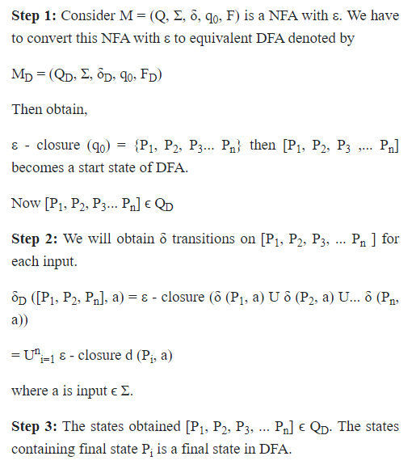

Q.1 Prove that √2 is not rational.

Q.2 Prove that if n is a positive integer such that n mod 4 is 2 or 3 then n is not a perfect square.
The method of contra positive is used. According to method of contra position for proving "If A then B" we prove if not A then not B.
Here we prove - IF n is a perfect square then n mod (4) must be 0 or 1.
Consider that there exists a positive integer n such that n mod 4 is 0 or 1. Then n is a perfect square i.e. n = m2, where m is another positive integer. Following are some cases -
1) If m mod 4 = 0 then m = 4i.
For instance - IF i = 1 then m is perfect square
Here i = 1, 4, 9, ...
2) If m mod 4 = 1, then m = 4i + 1.
Here i = 2, 6, 12, 20, ...
3) If m mod 4 = 2, then m = 4i + 2.
Here we fail to identify value of i that will make m as perfect square.
4) If m mod 4 = 3 then m = 4i + 3.
Again there does not exist any value of i which lead to m as perfect square. This proves that n is a positive integer such that n mod 4 is 2 to 3 and n is not a perfect square.
Q.3 Prove by induction on n that Σni=0 i = n(n+1)/2
Initially,
1) Basis of induction -
Assume, n = 1. Then,
L.H.S= n, = 1
R.H.S = n(n+1)/2 = 1(1+1)/2 = 2/2 = 1
Now,
2) Induction hypothesis -
Now we will assume n = k and will obtain the result for it. The equation then becomes,
1+2+3+ ... + k = (k(k+1)/2
3) Inductive step -
Now we assume that equation is true for n = k. And we will then check if it is also true for n = k + 1 or not.
Consider the equation assuming n = k + 1
L.H.S. = 1+ 2+ 3... + k + k + 1 equation (1)
k(k+1)/2 +k+1
= k(k + 1) + 2(k + 1)/2
= (k+ 1) (k + 2)/2
(taking common factor)
i.e. = (k + 1) (k + 1 + 1)/2
= R.H.S.
Q.4 Convert the given NFA with ɛ to NFA without ε. 
Step 1: We will first obtain ε - closure of each state i.e. we will find out ε - reachable states from current state.
Hence
ε - closure (q0) = {q0, q1, q2}
ε - closure (q1) = {q1, q2}
ε - closure (q2) = {q2}
As ε - closure (q0) means with null input (no input symbol) we can reach to q0, q1 or q2. In a similar manner for q1 and q2 ε - closures are obtained.
Step 2: Now we will obtain δ' transitions for each state on each input symbol.
δ' (q0, 0) = ε - closure (δ (δ' (q0, ε), 0))
= ε - closure (δ(ε - closure(q0), 0))
= ε - closure (δ(q0, q1, q2), 0).
= ε - closure (δ(q0, 0) U δ(q1, 0) U δ (q2,0))
= ε - closure (q0 U ϕ U ϕ)
= ε - closure (q0) = {q0, q1, q2}
δ' (q0, 1) = ε - closure (δ (δ`(q0,ε), 1))
= ε - closure (δ (q0, q1, q2), 1)
= ε - closure (δ (q0, 1) U δ (q1, 1) U δ (q2,1))
= ε closure (ϕ U q1 U ϕ)
= ε - closure (q1)
δ' (q0, 1) = {q1, q2}
δ' (q1,0) = ε - closure (δ (δ`(q1,ε), 0))
= ε - closure (δ (ε - closure (q1), 0))
= ε closure (δ (q1,q2), 0)
= ε closure (δ (q1, 0) U δ (q2, 0))
= ε closure (ϕUϕ)
= ε - closure (ϕ)
= ϕ
δ' (q1, 1) = ε - closure (δ (δ` (q1, ε), 1))
= ε - closure (δ (ε - closure (q1), 1))
= ε - closure (δ (q1, q2), 1)
= ε - closure (δ (q1, 1) U δ (q2, 1))
= ε - closure (q1 U ϕ)
= ε - closure (q1)
= {q1, q2}
δ′(q2, 0) = ε- closure (δ (δ` (q2, ε), 0))
= ε - closure (δ (ε - closure (q2), 0))
= ε - closure (δ (q2, 0))
= ε - closure (ϕ)
= ϕ
δ ' (q2, 1) = ε - closure (δ (δ` (q2, ε), 1))
= ε closure (δ (ε - closure (q2), 1))
= ε - closure (δ (q2,1))
= ε - closure (ϕ)
δ' (q2, 1) = ϕ
δ' (q0, 2) = ε - closure (δ (δ` (q2, ε), 2))
= ε - closure (δ (ε -closure (q0), 2))
= ε - closure (δ (q0, q1, q2), 2).
= ε - closure (δ (q0, 2) U δ (q1, 2) U δ (q2, 2))
= ε - closure (q2)
= ε - closure (q2)
= {q2}
δ' (q1,2) = ε - closure (δ (δ` (q1, ε), 2))
= ε - closure (δ (ε - closure (q1), 2))
= ε - closure (δ (q1, q2), 2)
= &- closure (δ (q1, 2) U δ (q2, 2))
= ε closure (ϕ U q2)
= {q2}
δ′ (q2, 2) = ε - closure (δ (δ` (q2, ε), 2))
= ε - closure (δ (ε - closure (q2), 2))
= ε - closure (δ (q2, 2))
= ε - closure (q2)
= {q2}
Now we will summarize all the computed δ' transitions -
δ'(q0, 0) = {q0, q1, q2}, δ'(q0, 1) = {q1, q2), δ'(q0, q2) = {q2}
δ'(q1, 0) = ϕ δ'(q1, 1) = {q1, q2}, δ'(q1, 2) = {q2}
δ'(q2, 0) = ϕ δ'(q2, 1) = ϕ δ'(q2, 2) = {q2}
Step 3:
From this we can write the transition table as -

Step 4:
The NFA will be,
Here q0, q1 and q2 is a final state because ε closure (q0), ε - closure (q1) and ε - closure (q2) contains final state q2.

Q.5 Construct an NFA without ε transitions for the NFA 
We will first obtain ε - closures of q0 and q1 as follows -
ε - Closure (q0) = {q0, q1}
ε - Closure (q1) = {q1}
Now δ' transitions on each input symbol is obtained as -
δ'(q0, 0) = ε - Closure (δ (δ` (q0, ε), 0))
= ε - Closure (δ (ε - Closure (q0), 0))
= ε - Closure (δ ((q0, q1), 0))
= ε - Closure (q0)
δ' (q0, 0) = {q0, q1}
δ' (q0, 1) = ε - Closure (δ (δ` (q0, ε), 1))
= ε - Closure (δ (ε - Closure (q0), 1))
= ε - Closure (8 ((q0, q1), 1))
= ε - Closure (q1)
δ' (q0, 1) = {q1}
δ' (q1, 0) = ε - Closure (δ (δ` (q1, ε), 0))
= ε - Closure (δ (ε - Closure (q1), 0))
= ε - Closure (δ (q1, 0))
= ε - Closure (ϕ)
δ' (q1, 0) = ϕ
δ' (q1, 1) = ε - Closure (δ (δ` (q1, ε), 1))
= ε - Closure (δ (ε - Closure (q1), 1))
= ε - Closure (δ (q1, 1))
= ε - Closure (q1)
δ' (q1, 1) = {q1}
The transation table for NFA without & will be,
The transition diagram will be -

Q.7 Theorem: Let L be a set accepted by non-deterministic finite automation. Then there exists a deterministic finite automation that accepts L. OR Prove that "A language L is accepted by some DFA if and only if L is accepted by some NFA".


Q.8 Prove that there exists a DFA for every ε - NFA.
